Partes de nieve · Dónde esquiar
Partes de nieve diarios para esquiadores: dónde está la nieve, qué llega y dónde esquiar, a partir del mapa de nieve de SnowScope y de las estaciones de medida. Cada cifra sale de los datos del día.

Krvavec en diciembre: forfait de día 47 EUR, 6 días 205 EUR, pero solo 13 cm a media montaña un 15 de diciembre típico y 11 de 46 inviernos sin nieve ese día.

Esquía 157 km de pistas señalizadas en Serre Chevalier, donde la cima de la montaña tiene un 100 % de probabilidad de nieve a mediados de diciembre.

Turracher Höhe en diciembre: 23 cm a media montaña un 15 de diciembre típico, 39 % de inviernos con 30 cm antes de Navidad; 6 días en temporada baja 353 EUR.

Hochkar en diciembre: forfaits de día vistos de 32,90 a 47,90 EUR según la fecha; 38 cm a media montaña un 15 de diciembre típico, a la baja desde los 80.

Idre Fjäll en diciembre: 32 cm a media montaña un 15 de diciembre típico; 65 % de inviernos con 30 cm a mitad de mes, 76 % en Navidad. Probabilidades sinceras.

Diez estaciones de esquí europeas clasificadas por su valor en diciembre, lideradas por Les 2 Alpes con 75 cm de nieve a media montaña.

Boí Taüll empieza a 2039 m y supera a Baqueira Beret en el precio del forfait, aunque la nieve de principios de diciembre requiere algo de paciencia.
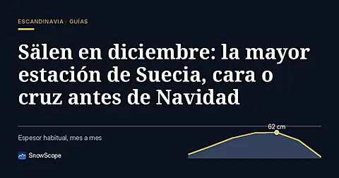
Sälen en diciembre: 28 cm un 15 de diciembre típico y 48 % de inviernos con 30 cm a mitad de mes, menos que en los 80; Trysil, al lado, va mejor.
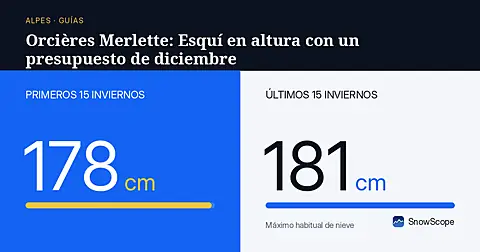
Orcières Merlette ofrece una base elevada a 1826 m y un pase de 6 días desde 227 EUR, lo que la convierte en una opción fiable para un viaje de esquí en diciembre.

¿Vale la pena Alpe d'Huez para diciembre de 2026? Comprobamos las probabilidades de nieve, el precio inicial de 58,00 EUR y lo comparamos con Les 2 Alpes.
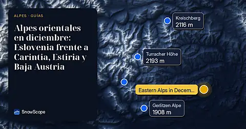
Los forfaits eslovenos son los más baratos (Krvavec 205 EUR por 6 días), pero allí la nieve natural de diciembre escasea; Lachtal, el Hochkar y el glaciar del Möll van mejor.

Cauterets ofrece 25 km de pistas por 46 EUR, pero nuestro histórico de nieve muestra que la mejor oportunidad para encontrar cobertura es la última semana de diciembre.
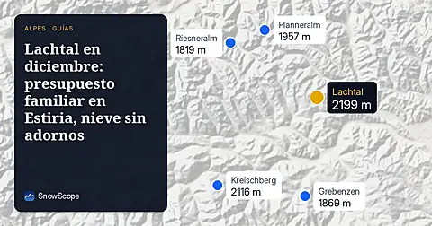
Esquiar en Lachtal en diciembre: forfait de día 62 EUR, niños hasta 6 años gratis, 46 cm a media montaña un 15 de diciembre típico, pero con tendencia a la baja.

Esquía los 131 km de pistas en la Forêt Blanche este diciembre con un pase de seis días por 298 EUR.

Ruka en diciembre: forfait de 6 días 265 EUR, día 58 EUR; 36 cm un 15 de diciembre típico, pero solo el 39 % de inviernos con 30 cm la primera semana.

En Monterosa Ski el forfait de día online va de 40,00 a 71,00 EUR. En diciembre la nieve está arriba: 124 cm habituales a 3030 m, 6 cm a 1207 m.
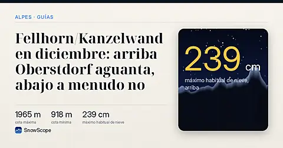
Fellhorn/Kanzelwand en diciembre: 63 cm en la cima (1965 m) un 15 de diciembre típico, 10 cm abajo; forfait de 6 días de Adviento a 344,50 EUR hasta el 20 de diciembre.

Planifica tu viaje de diciembre de 2026 a Les Orres comparando los precios de los pases semanales con nuestro historial de nieve de 46 inviernos pasados.

Hemavan en diciembre: 82 cm a media montaña un 15 de diciembre típico, todos los inviernos con 30 cm a mitad de mes; el diciembre más nevado de nuestra selección nórdica.

Compara Grandvalira y estaciones españolas en diciembre de 2026 en cuanto a espesores de nieve, cotas de remontes y precios desde 49,00 EUR.

Glaciar del Pitztal en diciembre: 87 cm a media montaña un 15 de diciembre típico, más nieve que en los años 80; forfait de día 77 EUR, 6 días 410 EUR.

Para una semana de esquí familiar a buen precio en diciembre en Astún-Candanchú, apunta a finales de mes, cuando las pistas altas tienen buena nieve en el 67 % de los inviernos pasados.

Alemania en diciembre: la Zugspitze y la cima del Fellhorn tenían 30 cm a mitad de mes en al menos 9 de cada 10 inviernos; Sudelfeld, Brauneck y Feldberg rara vez.

Puy-Saint-Vincent combina un forfait de adulto de 1 día por 44 EUR con una buena cantidad de nieve en diciembre en las zonas altas, comparado aquí con su gran vecino Serre Chevalier.

Oppdal en diciembre: 60 cm en la base (585 m) un 15 de diciembre típico, 93 % de inviernos con 30 cm a mitad de mes, mejor que la base de Trysil.

Grimentz-Zinal ofrece 71 km de pistas y nieve fiable en altura para tu viaje de diciembre, con pases de 6 días a CHF 339,00.

Austria antes de Navidad: Galtür 258 EUR y Kühtai 269 EUR por 6 días, con 30 cm en más del 90 % de los inviernos; los glaciares cuestan más, las estaciones pequeñas son una apuesta.

¿Planeas un viaje en diciembre a Baqueira Beret? Mira nuestro historial de nieve, precios de forfaits desde 70,00 € para un pase de 1 día, y cómo se compara con Astún-Candanchú.

Clasificamos las estaciones de esquí francesas según las probabilidades de nieve en diciembre y los precios de los forfaits, empezando desde 36,00 EUR por un pase diario de adulto en Les Karellis.

Galtür en diciembre: 55 cm a media montaña un 15 de diciembre típico, 93 % de inviernos con 30 cm a mitad de mes; día en temporada baja 55,50 EUR hasta el 18 de diciembre.

Geilo en diciembre: 57 cm a media montaña un 15 de diciembre típico, 96 % de inviernos con 30 cm a mitad de mes; forfait de día desde 590 NOK (unos 56 EUR).
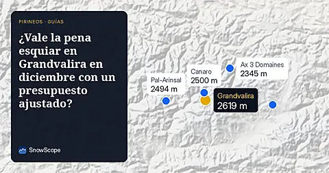
A menudo se vende Grandvalira como una opción económica para esquiar en diciembre, pero la nieve natural en la base promedia solo 9 cm en nuestros inviernos pasados.

Hemsedal en diciembre: 70 cm a media montaña y 106 cm en la cima un 15 de diciembre típico, pero 32 cm en la base; Geilo, al lado, desde 590 NOK el día.

Glaciar de Hintertux en diciembre: 98 cm a 3245 m y 52 cm a media montaña un 15 de diciembre típico; forfait de día 82 EUR, 6 días 399 EUR.
Compara las probabilidades de nieve en diciembre y los precios verificados de forfaits desde 40,00 EUR en las estaciones italianas para tu escapada de fin de semana en coche.
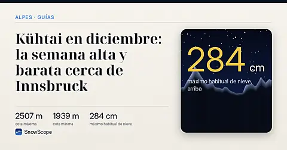
Esquiar en Kühtai en diciembre: 60 cm en la base (1939 m) un 15 de diciembre típico y forfait de 6 días en temporada baja a 269 EUR hasta el 18 de diciembre.

Les 2 Alpes llega a los 3511 m para asegurar nieve en diciembre de 2026, con un forfait de adulto de 6 días por 266,50 EUR.

Les Karellis ofrece 45 km de pistas y un forfait de 6 días para adultos por 191,00 EUR, con un 98 % de probabilidad de nieve a media montaña a finales de diciembre.

Levi en diciembre: 38 cm un 15 de diciembre típico, 91 % de inviernos con 30 cm en Navidad y más nieve que antes; forfait de día 60 EUR, 57 EUR en línea.
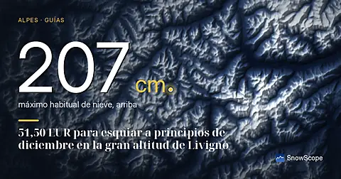
Esquía en Livigno por 51,50 EUR al día antes del 18 de diciembre, cuando la nieve en la cima alcanza los 30 cm en el 100 % de los inviernos pasados.

Montgenèvre tiene 56 cm de nieve habitual en diciembre en su base, dando a los esquiadores de fin de semana una cobertura más profunda que Sestriere al otro lado de la frontera.

Esquiar en Obertauern en diciembre: 43 cm un 15 de diciembre típico a media montaña y forfait de 6 días a 331 EUR antes de Navidad.

Pila, sobre Aosta, combina un forfait de día a un precio fijo de 60,00 EUR con una nieve de diciembre fiable en sus cotas altas.

Los remontes de Saas-Fee llegan a 3556 m, donde nuestro historial de nieve muestra que el 100 % de los inviernos pasados tienen al menos 30 cm de nieve a mediados de diciembre.

12 estaciones nórdicas en diciembre: Hemavan, Hemsedal y Geilo tenían 30 cm a media montaña a mitad de mes en el 96-100 % de los inviernos; día en Finlandia 58-60 EUR.

Descubre las tranquilas pistas de St-Luc Chandolin, donde la nieve a media montaña ha alcanzado los 30 cm en el 98 % de los inviernos durante finales de diciembre.

Trysil en diciembre: 44 cm a media montaña un 15 de diciembre típico, 83 % de inviernos con 30 cm a mitad de mes; los precios son dinámicos, reserva pronto.

Valloire-Valmeinier ofrece 131 km de pistas y un 98 % de probabilidad de tener 30 cm de nieve a media montaña a mediados de diciembre.

Zugspitze en diciembre: 122 cm a 2627 m un 15 de diciembre típico, forfait de día adulto en línea 70,50 EUR; debajo, Garmisch-Classic 69 EUR con mucha menos nieve.
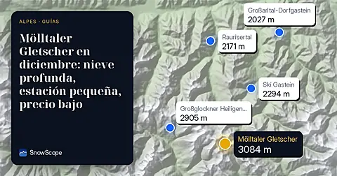
Mölltaler Gletscher en diciembre: 66 cm en el remonte más bajo (2103 m) y 128 cm a media montaña un 15 de diciembre típico; 6 días en temporada baja a 332 EUR.

¿Puede un esquiador principiante y prudente confiar en Courmayeur en diciembre, cuando la media a media altura es de 60 cm de nieve según nuestro historial de inviernos pasados?
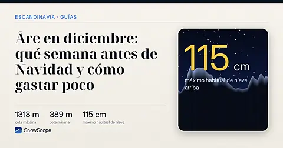
Åre en diciembre: 40 cm a media montaña un 15 de diciembre típico, 89 % de inviernos con 30 cm a mitad de mes, pero una fuerte caída en la cima desde los 80.


En 24 de 46 inviernos, las estaciones de la vertiente italiana y del sur de los Alpes franceses tuvieron un invierno relativamente mejor que la vertiente norte. El gráfico, los grandes años y el tiempo que hubo detrás.
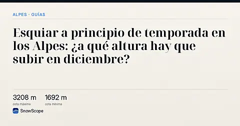
En diciembre, la nieve depende sobre todo de la altura. 46 inviernos pasados en 676 estaciones de los Alpes muestran cuánta nieve esperar el 1, el 15 y el 22 de diciembre, desde menos de 1200 m hasta más de 2400 m.

La isoterma de 0 °C en los Pirineos, próximos días: 2420 m a 3710 m. La cota de nieve, unos 300 m más abajo, alcanza su máximo de 3400 m en Masella …
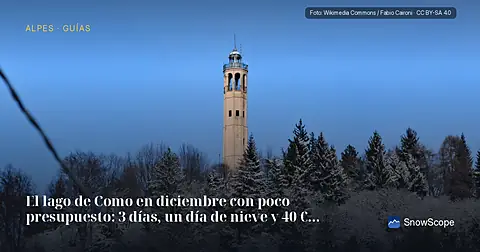
Un plan barato de 3 días en el lago de Como en diciembre con precios reales 2026-27: trenes, barcos, funicular y esquí en Piani di Bobbio o Madesimo, lo que ahorras frente a Cortina y la probabilidad de nieve en Navidad.
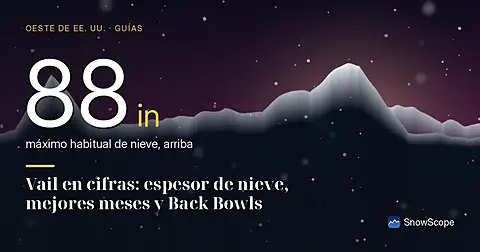
Vail en cifras: un pico habitual de unas 64 in (162 cm) a media montaña en 46 inviernos pasados, marzo el mes más nevado, más terreno, acceso y seguridad.

Zermatt en cifras: dónde dura la nieve, los meses más seguros y cómo llegar al pueblo sin coches, a partir de 46 inviernos pasados.

Steamboat, Colorado, en familia: qué funciona para los más pequeños, los niños, los adolescentes y los padres, con la nieve de 46 inviernos pasados a tres alturas.

¿Es Verbier para principiantes? ¿Cuándo es mejor la nieve? ¿Cómo se llega? Respuestas sobre las 4 Vallées y 46 inviernos pasados.

Cómo pasar el primer día en Park City Mountain, Utah, y cuándo ir: nuestro histórico da unas 71 in (180 cm) de pico habitual a media montaña en 46 inviernos pasados.

La Sella Ronda desde Sëlva en Val Gardena: puertos de Gardena, Campolongo, Pordoi y Sella en orden, con nuestro histórico de nieve de 46 inviernos pasados.

Mt Baker, Washington: unas 133 in (337 cm) de pico habitual a media montaña en 46 inviernos pasados, un récord mundial de nieve y ningún alojamiento a pie de pista.

Val d'Isère y el Espace Killy para principiantes, esquiadores medios y expertos, con la nieve de 46 inviernos pasados a tres alturas.

Planifica Mammoth Mountain por temporada: unas 93 in (235 cm) de pico habitual a media montaña en 46 inviernos pasados, marzo el más nevado, primaveras largas e inviernos variables.

Kitzbühel es famosa y baja. Lo que dicen 46 inviernos pasados de la nieve a 762 m, 1.377 m y 1.993 m, qué ha cambiado y qué semanas son la apuesta más segura.
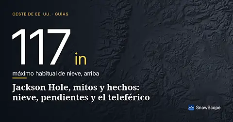
Los mitos sobre Jackson Hole frente a los hechos y nuestro histórico: unas 80 in (204 cm) de pico habitual a media montaña en 46 inviernos pasados, sin un descenso claro.

Diez puntos prácticos para un viaje de esquí a Livigno: las carreteras, el frío, las tiendas libres de impuestos, las dos laderas y la mejor época de nieve, según 46 inviernos pasados.

Llegar a Telluride en invierno, aeropuerto por aeropuerto: Telluride Regional, Montrose, la carretera 145 con la ley de tracción de Colorado y la telecabina gratuita a Mountain Village.
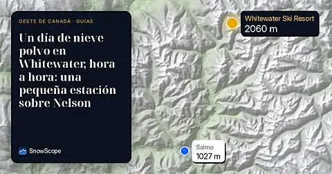
Cómo suele transcurrir un día de nieve en Whitewater, cerca de Nelson, desde la primera mirada a la previsión hasta la última bajada, con la nieve de 46 inviernos pasados a tres alturas.
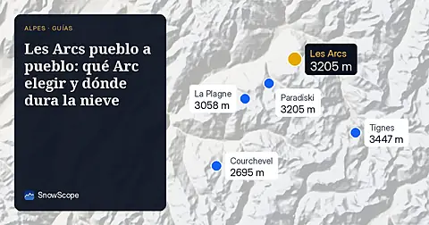
Arc 1600, 1800, 1950 y 2000 comparados por nieve, pistas y acceso, con 46 inviernos pasados de nuestro histórico de nieve a tres alturas de Les Arcs.

Llegar a Snowbird en invierno: una sola carretera de cañón (SR-210), la ley de tracción de Utah, el bus de esquí de UTA y el trayecto desde el aeropuerto.

Whistler Blackcomb para cada nivel, con nuestro histórico: unos 370 cm de pico habitual a media montaña en 46 inviernos pasados, marzo y abril los meses más nevados.

De los campesinos walser al Weißer Ring: las fechas que hicieron Lech Zürs y, después, nuestro histórico de nieve antes y ahora, los primeros quince de 46 inviernos pasados frente a los últimos quince.

En coche a Palisades Tahoe en invierno: distancias desde Reno y Sacramento, cadenas R-1, R-2 y R-3 en California, aparcamiento con reserva, buses TART.
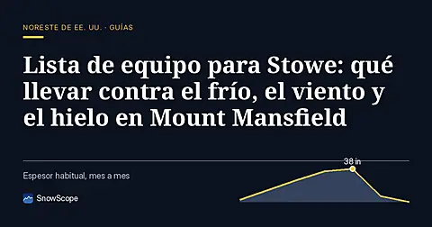
Una lista práctica para Stowe, Vermont: capas, protección de la cara, máscara, cantos afilados y calentadores, ligada a la nieve de 46 inviernos pasados en Mount Mansfield.

Esquiar en Lake Louise a principio de temporada: por qué empieza pronto, cómo suele ser la nieve de noviembre y diciembre en 46 inviernos pasados y cómo esquiar sobre una base todavía fina.

Qué es verdad de La Grave, la montaña del fuera de pista bajo la Meije: terreno, seguridad, nieve por mes y tendencia, a partir de 46 inviernos.

Big Sky, Montana, fácil de imaginar: 5850 acres bajo el Lone Peak, y una nieve unas cinco veces más gruesa cerca de la cima que en la base en 46 inviernos pasados.

Andorra no tiene un gran aeropuerto: cómo llegar a Grandvalira desde Barcelona o Toulouse, el túnel de Envalira, la carretera CG2 y los aparcamientos.
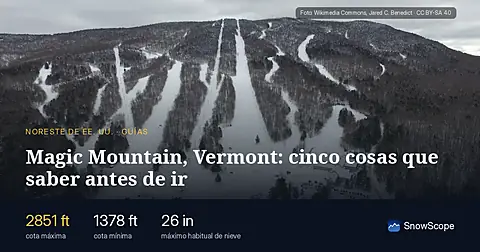
Magic Mountain en Londonderry, Vermont: una pequeña estación independiente con bosques empinados, una vieja telesilla roja y poca nieve natural. Cinco cosas que saber, con la nieve de 46 inviernos pasados.

Esquía primero en tu cabeza todo el desnivel de Revelstoke: la nieve en la cima, a media montaña y en la base del valle en 46 inviernos pasados, y cuándo está mejor cada parte.

Siete días en la Silvretta Arena, uno a uno: dónde está la nieve, cuándo pasar a Samnaun y qué dicen 46 inviernos pasados de la nieve de Ischgl a tres alturas.

Aspen Snowmass comparado: Snowmass tiene unas 75 in (190 cm) de pico habitual a media montaña en 46 inviernos pasados, Aspen Mountain unas 69 in (174 cm).

Gourette y Cauterets frente a frente: altitudes, nieve habitual por mes, mejores semanas y cómo llegar, a partir de 46 inviernos pasados.

Mad River Glen, Vermont: nieve natural, unas 30 in (75 cm) de pico habitual a media montaña en 46 inviernos pasados, febrero el más nevado. Tres formas de planear el día.

Banff Sunshine Village mes a mes: unos 100 cm a media montaña en un marzo habitual en 46 inviernos pasados, abril el más nevado arriba y temporada hasta finales de mayo.

Saas-Fee no tiene coches: el tren a Visp y el PostBus 511, la carretera del valle del Ródano y los trenes de coches, los aparcamientos y los buses gratis.

Unas 109 in (276 cm) es el pico habitual de Alta a media montaña en 46 inviernos pasados. Aquí: por qué el snowboard se queda en casa, los mejores meses y cómo subir el cañón.

Modelo más previsión en los Pirineos hoy dan nieve fina de principio de temporada y aire templado que puede dejar costra. Qué ponerse, qué llevar y …

Alpe d'Huez mira al sol. Cómo planear el día por la hora y la altura, con la nieve de 46 inviernos pasados desde los pueblos bajos hasta el Pic Blanc.

Baqueira-Beret está en el Valle de Arán, en la vertiente atlántica del Pirineo. Qué significa para su nieve, comprobado con 46 inviernos pasados frente a La Molina, y cuándo ir.

Retrato de Bonneval-sur-Arc en la Alta Maurienne: tejados de piedra, un puerto cerrado, un pequeño dominio y una nieve sorprendentemente gruesa, según 46 inviernos pasados.
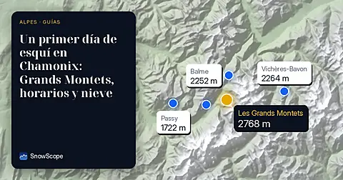
Cómo pasar un primer día de esquí en Chamonix, de los Grands Montets sobre Argentière a la hora adecuada para cada ladera, con 46 inviernos de datos de nieve.

Cortina d'Ampezzo de tres maneras: Tofana, Faloria-Cristallo y Cinque Torri-Lagazuoi, con 46 inviernos de datos de nieve a tres alturas.

Chantarella, Marguns, Piz Nair, White Turf: las palabras que se oyen en St. Moritz, explicadas, y lo que 46 inviernos pasados de nuestro histórico de nieve dicen de cada altura de Corviglia.

Davos y Klosters comparten seis montañas de esquí. Un plan día a día, empezando por el Parsenn, con lo que 46 inviernos pasados de nuestro histórico dicen de sus alturas.

Cuándo reservar Courchevel y las 3 Vallées, qué pueblo elegir y dónde dura la nieve, a partir de 46 inviernos pasados.

St. Anton y Ski Arlberg a lo largo del invierno: el espesor de nieve habitual cada mes a tres alturas, a partir de 46 inviernos pasados.

Un año de nieve en Sölden, fase a fase: cuándo blanquean los glaciares, el fin de semana de Copa del Mundo, el centro del invierno y las semanas de primavera, según 46 inviernos pasados a tres alturas.

Un cuaderno práctico sobre Oukaïmeden, en el Alto Atlas: cuándo suele llegar la nieve, cuánta, qué laderas elegir y cómo llegar desde Marrakech.

Nuestra previsión pone la isoterma de 0 °C en los Pirineos entre 2610 m y 3840 m en los días que vienen. En el momento más templado del día la cota …

Cómo aprovechar un día en Luz-Ardiden, una pequeña estación sobre Luz-Saint-Sauveur en los Altos Pirineos: la carretera, los dos sectores, la nieve de 46 inviernos pasados y qué semanas elegir.

Michlifen, cerca de Ifrane, tiene nieve en episodios cortos más que una temporada. Lo que muestran 46 inviernos pasados, por qué el espesor habitual es cero y cómo estar allí los días buenos.

Tres maneras de pasar un día desde Méribel: al este hacia Courchevel, al sur hacia Val Thorens o en casa en el Mont Vallon, con la nieve de 46 inviernos pasados a tres alturas.


Rasos de Peguera recibió 15 cm de nieve nueva en las últimas 72 horas. Ahora tiene unos 20 cm en las pistas altas, según nuestro modelo de nieve.

Combinamos el espesor de nieve de hoy, la nieve nueva de las últimas 72 horas y la previsión para elegir Rasos de Peguera, Aramón Cerler y Masella. …
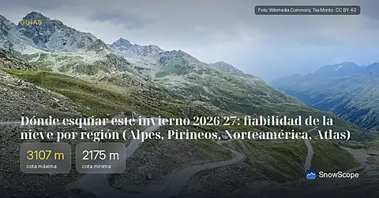
¿Qué estaciones tienen casi siempre nieve? Analizamos 46 inviernos pasados (1980-81–2025-26) para cada estación de nuestro mapa y contamos los días …

Rasos de Peguera recibió 17 cm de nieve nueva en las últimas 72 horas, 17 cm de ellos en las últimas 24 horas. Ahora tiene unos 13 cm en las pistas …

Combinamos el espesor de nieve de hoy, la nieve nueva de las últimas 72 horas y la previsión para elegir Masella, Estació d'esquí de Port-Ainé y …